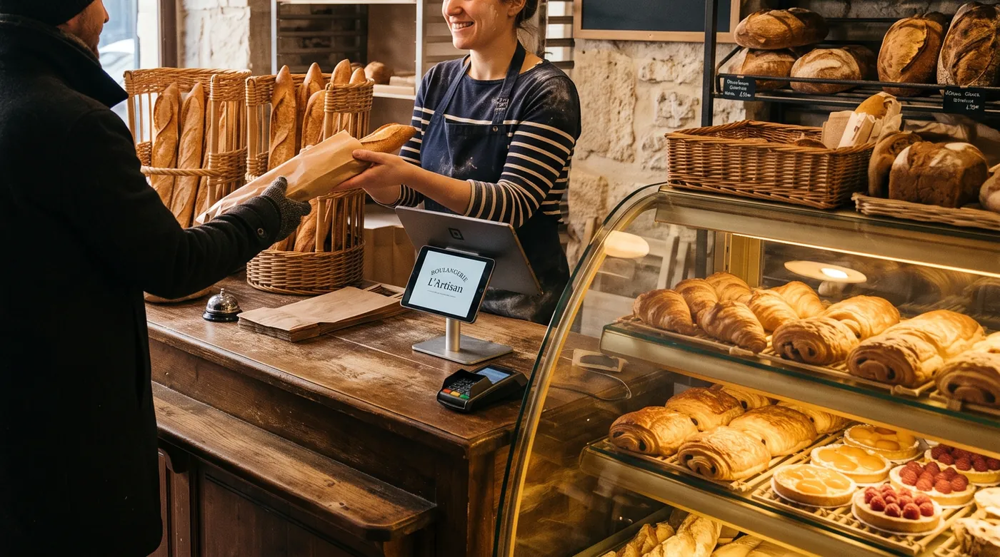

Caisse pour boulangerie-pâtisserie : SumUp, Zettle ou L'Addition en 2026 ?
Un samedi matin de coup de feu, la queue jusqu'à la porte, et c'est le moment où la caisse choisit de ramer. C'est la vraie question que se posent la plupart des boulangers avant de signer : est-ce que cette caisse va tenir le rythme, gérer le pain au poids sans faire perdre trente secondes par client, et ne pas m'enfermer dans un contrat que je regrette six mois plus tard ? On a regardé de près SumUp (qui a racheté Tiller), Zettle (devenu PayPal POS) et L'Addition, avec les vrais prix et les vraies zones d'ombre, et on vous dit où digabloPos se situe dans tout ça.

Le vrai test : tenir le coup de feu du matin
Dans une boulangerie, la caisse n'a pas le droit à l'erreur entre 7h30 et 9h30, ni le samedi entre 10h et midi. C'est là que la plupart des soucis sortent : des utilisateurs de l'app SumUp Caisse Pro rapportent, dans leurs avis publics, des plantages en pleine affluence qui font perdre des commandes et allongent la file. Ce n'est pas propre à une seule marque, aucun logiciel n'est à l'abri d'un bug, mais c'est le premier critère à tester vous-même avant de signer quoi que ce soit.
Pour aller plus loin : avant de signer quoi que ce soit, regardez pièges du contrat de caisse, puis facture normalisée en Afrique de l'Ouest. Et si le sujet vous concerne, facturation électronique.
Concrètement : demandez une période d'essai, installez la caisse un vrai jour de rush, et regardez ce qui se passe si la connexion faiblit pendant que trois clients attendent. Une caisse qui continue à encaisser hors ligne et qui synchronise après coup vous évite l'arrêt complet du service.
Vente au poids : qui gère vraiment ça
Pain à la coupe, chocolats, confiseries au poids : une boulangerie-pâtisserie vend rarement tout à la pièce. La bonne nouvelle, c'est que ce n'est plus un critère qui élimine grand monde en 2026.
SumUp le documente clairement sur sa page dédiée boulangerie : "Pain, chocolat ou confiseries au poids, tous vos chiffres sont reliés à votre caisse enregistreuse", avec un suivi des ventes par type de produit et par jour de la semaine. digabloPos gère aussi la vente au poids (un article pesé sur une balance, prix calculé au kilo) en plus de la vente à l'unité. Pour Zettle/PayPal POS et L'Addition, en revanche, la documentation publique consultée en août 2026 ne détaille pas de fonction de vente au poids ni de connexion à une balance : cela ne veut pas dire que l'un ou l'autre en est dépourvu, seulement que ce n'est pas mis en avant publiquement. Si c'est un critère non négociable pour vous, demandez une démonstration en direct avant de signer, plutôt que de vous fier à une page marketing.
SumUp (et l'ex-Tiller)
SumUp est d'abord connu pour son lecteur de carte, mais l'éditeur a construit un vrai logiciel de caisse autour, avec depuis 2021 le moteur de Tiller (racheté à l'époque) qui alimente son offre restauration et commerce plus poussée, aujourd'hui commercialisée sous des noms comme « Caisse Plus » ou « SumUp POS Pro » selon les pages. Le plan de base (catalogue, encaissement, rapports simples) est gratuit. Pour la vente au poids et les fonctions avancées, il faut passer sur un abonnement payant : les prix observés selon les sources vont d'environ 39 à 49 € HT/mois pour la formule caisse la plus courante, avec du matériel vendu à part (lecteur à partir de 34 € HT, terminal complet à partir de 169 € HT). Sur les paiements par carte, comptez environ 1,75 % par transaction sans abonnement, ou 0,89 % avec un abonnement « Paiements Plus » à 19 € HT/mois.
Le point à vérifier vous-même avant de signer : la durée d'engagement. Certains comparateurs indépendants évoquent un engagement possible de 1, 3 ou 5 ans sur la partie caisse, quand d'autres avis affirment que le matériel s'achète sans contrat de durée. Les pages officielles que nous avons consultées ne tranchent pas clairement la question. Faites-vous confirmer par écrit la durée exacte et les conditions de sortie avant toute signature.
👍 Points forts
- Plan de base gratuit pour démarrer
- Vente au poids documentée pour la boulangerie
- Marque connue, support en français
👎 À noter
- Durée d'engagement pas claire selon les sources, à faire confirmer par écrit
- Support décrit par des avis en ligne comme limité au chat/email, sans ligne téléphonique dédiée
Zettle, devenu PayPal POS
Depuis 2025, Zettle s'affiche sous la marque « Point de vente PayPal » (PayPal POS) sans changement de fond pour les utilisateurs existants : c'est le même produit que Zettle, racheté par PayPal en 2018, seule l'étiquette a changé. Le modèle reste celui d'un lecteur de carte avant tout, sans abonnement mensuel obligatoire sur l'essentiel, une commission autour de 1,75 % par transaction carte, et du matériel à part (lecteur mobile à partir d'environ 29 € HT, second lecteur à 79 € HT).
C'est une option correcte pour une petite boulangerie qui débute ou un point de vente d'appoint (marché, événement), à condition d'accepter un logiciel de caisse plus sommaire qu'un spécialiste métier. La documentation publique ne détaille pas de fonction dédiée à la vente au poids : à vérifier en démo si vous en avez besoin au quotidien.
👍 Points forts
- Aucun abonnement mensuel obligatoire sur l'essentiel
- Mise en route très rapide
- Matériel abordable
👎 À noter
- Commission sur chaque vente carte
- Vente au poids non documentée publiquement, à vérifier en démo
- Rebranding récent : vérifiez que vos habitudes suivent le nouveau nom
L'Addition
L'Addition est surtout connu comme LE logiciel de caisse iPad de la restauration en France, mais l'éditeur propose aussi une page dédiée boulangerie, avec calcul automatique de la monnaie à rendre, formules personnalisées (petit-déjeuner, menus sandwichs) et suivi des stocks de farine ou de pâtisseries dans le tableau de bord. C'est un choix pertinent si votre boulangerie a un vrai coin salon de thé avec service à table.
Deux points à connaître avant de vous lancer : il faut du matériel Apple (iPad), et la tarification n'est pas publique, il faut demander un devis. Des retours d'utilisateurs et comparateurs évoquent un logiciel seul autour de 49 € HT/mois, et un budget logiciel + matériel complet qui peut grimper à 150-200 €/mois selon la configuration. La documentation publique consultée en août 2026 ne mentionne pas de fonction de vente au poids : demandez-le explicitement en démo si c'est important pour votre comptoir.
👍 Points forts
- Fonctionne hors ligne
- Pensé pour un vrai service en salle (salon de thé, snacking sur place)
- Suivi de stock intégré au reporting
👎 À noter
- Pas de grille tarifaire publique, devis obligatoire
- Nécessite du matériel Apple
- Vente au poids non documentée publiquement, à vérifier en démo
digabloPos
Face à ces trois acteurs, digabloPos joue une carte simple pour une boulangerie : un plan de base gratuit à vie, sans engagement caché à faire confirmer par écrit, avec un mode hors ligne complet qui continue à encaisser si internet coupe pendant le rush, et la vente au poids gérée nativement à côté de la vente à l'unité. La caisse est certifiée NF525 en France, gère le crédit client pour vos comptes pro (traiteurs, restaurateurs qui commandent chez vous) et suit les lots et dates de péremption, utile pour les pâtes surgelées ou le snacking sous vide. Les rapports illimités, les employés au-delà de 2, les notifications, le stock avancé et les réservations restent des modules payants à la carte, environ 5 à 20 $/mois selon le module : vous ne payez que ce dont vous avez vraiment besoin.
Tableau comparatif
| Critère | digabloPos | SumUp | Zettle / PayPal POS | L'Addition |
|---|---|---|---|---|
| Plan gratuit à vie | Oui | Base oui | App oui | Non |
| Vente au poids documentée | Oui | Oui | Non documentée | Non documentée |
| Mode hors ligne | Oui, auto-sync | Partiel | Limité | Oui |
| Grille tarifaire publique | Oui | Oui | Oui | Sur devis |
| Durée d'engagement claire | Aucun engagement | Contredit selon les sources | Aucun sur l'essentiel | À demander au devis |
| Certification NF525 revendiquée | Oui | Oui | À vérifier | À vérifier |
Informations vérifiées le 21 août 2026 auprès des pages officielles des éditeurs et de plusieurs comparateurs tiers. Les prix, commissions et conditions évoluent régulièrement : confirmez toujours les chiffres exacts sur le site officiel de chaque éditeur avant de signer.
Gérer les invendus sans y passer la soirée
C'est le sujet que peu de comparatifs abordent alors qu'il pèse directement sur votre marge : que faire du pain et des viennoiseries en fin de journée. Un historique de ventes fiable, par produit et par jour de la semaine, est ce qui vous permet d'ajuster la production plutôt que de deviner. C'est aussi ce qui rend un rapport de caisse utile pour négocier avec une association ou une appli anti-gaspillage, plutôt qu'un chiffre approximatif noté à la main.
Engagement et résiliation : ce qui reste flou
On le dit clairement parce que ça vaut la peine de le savoir avant de signer : les sources publiques sur l'engagement contractuel de l'offre caisse de SumUp se contredisent. Certains comparateurs indépendants parlent d'un engagement de 1, 3 ou 5 ans sur la partie caisse, d'autres affirment que le matériel s'achète sans contrat de durée et que seuls les abonnements se résilient au mois. Nous n'avons pas pu trancher cette contradiction avec certitude sur les seules pages publiques consultées en août 2026. La bonne pratique, pour n'importe quel éditeur d'ailleurs : demandez la durée d'engagement et les frais de sortie par écrit avant de signer, ne vous fiez pas uniquement à ce que dit un comparateur tiers, y compris celui-ci.
NF525 en boulangerie : ce qu'il faut vérifier
Depuis 2018, toute boulangerie qui encaisse des particuliers doit utiliser un logiciel de caisse conforme à la réglementation anti-fraude à la TVA (inaltérabilité, sécurisation, conservation et archivage des données). En cas de contrôle fiscal, l'absence de conformité peut entraîner une amende.
Le point d'attention pour 2026 : les modalités précises de certification (attestation individuelle de l'éditeur ou certification par un organisme accrédité comme le LNE ou l'AFNOR) ont fait l'objet de plusieurs ajustements dans les lois de finances successives, avec des échéances qui ont bougé. Nous ne prenons pas position sur la date exacte en vigueur au moment où vous lisez cet article : demandez systématiquement à l'éditeur son attestation ou son certificat à jour, et vérifiez le point avec votre expert-comptable ou sur impots.gouv.fr avant de choisir une solution.
Quelle caisse choisir selon votre boulangerie
- Petite boulangerie qui démarre, budget serré : Zettle (PayPal POS) ou SumUp en version gratuite, pour tester sans engagement lourd sur le matériel.
- Boulangerie avec un vrai coin salon de thé et service à table : L'Addition, à condition de demander un devis détaillé et de faire préciser les conditions de sortie.
- Boulangerie qui veut la vente au poids gérée nativement sans mauvaise surprise sur l'engagement : digabloPos, ou SumUp après avoir fait confirmer la durée exacte du contrat par écrit.
Questions fréquentes
Est-ce que la caisse tient le coup de feu du matin sans planter ?
Ça dépend surtout de votre connexion et de l'appareil, pas seulement du logiciel. Testez toujours la caisse un vrai samedi matin, avec la queue jusqu'à la porte, avant de signer, et vérifiez ce qui se passe si le wifi coupe pendant le rush.
SumUp Caisse impose-t-il un engagement de plusieurs années ?
Les sources publiques se contredisent sur ce point : certaines évoquent un engagement de 1, 3 ou 5 ans sur l'offre caisse, d'autres parlent d'un matériel acheté sans contrat de durée. Demandez la réponse écrite avant de signer, ne vous fiez pas à un comparateur tiers.
Zettle et PayPal POS, c'est le même produit ?
Oui. Zettle a changé de nom en 2025 pour devenir « Point de vente PayPal » (PayPal POS), après son rachat par PayPal en 2018. Le produit reste globalement le même, seule l'étiquette change.
Faut-il une caisse certifiée NF525 pour une boulangerie ?
Oui, toute boulangerie qui encaisse des particuliers doit utiliser un logiciel conforme à la réglementation anti-fraude à la TVA. Les modalités précises de certification ont changé plusieurs fois dans les lois de finances récentes : vérifiez le point exact avec votre expert-comptable ou sur impots.gouv.fr avant de choisir.
Prêt à encaisser sans mauvaise surprise sur l'engagement ?
Installez votre caisse gratuite en 5 minutes, sans engagement ni carte bancaire.
Créer ma caisse gratuite, 5 minSources officielles
Les tarifs et les fonctions bougent souvent. Voici la documentation des éditeurs cités, pour vérifier par vous-même.
- Page officielle SumUp Boulangerie : ce que l'éditeur documente lui-même sur la vente au poids et le suivi des ventes.
- Page officielle L'Addition Boulangerie : ce que l'éditeur documente lui-même sur ses fonctions dédiées.